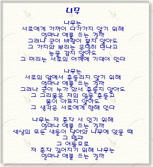


<!DOCTYPE html>
<html>
<head>
<meta http-equiv="Content-Type" content="text/html; charset=UTF-8" />
<title>Insert title here</title>
<script type="text/javascript">
//팝업을 해제하고 실행해야 함
// 빈 팝업창 띄우기
win = window.open("", "", "left=300, top=150, width=350, height=500");
function newOpen(){
	//open(), close()를 생략 가능 - 지우기를 하려면 open,close가 필요함
	win.document.open(); //도큐먼트 객체 열기
	win.document.write( "<b>자바스크립트로 만든 웹문서</b><br>");
	win.document.write( "");
	win.document.write(
			"<input type='button' value='닫기' onclick='window.close()' />");
	win.document.close(); //도큐먼트 객체 닫기
}
function newClear(){
	win.document.open();
	win.document.clear(); //웹문서의 내용 지우기
	win.document.close();
}
function newClose(){
	win.close();
}
</script>
</head>
<body>
<input type="button" value="내용 채우기" onclick="newOpen()" />
<input type="button" value="내용 지우기" onclick="newClear()" />
<input type="button" value="팝업창 닫기" onclick="newClose()" />
</body>
</html>


